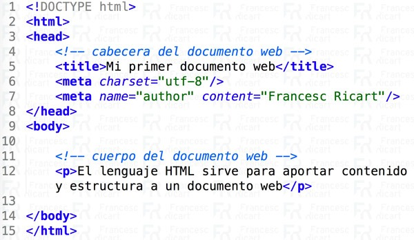

Introducción a HTML
El HTML es un lenguaje de marcado que constituye uno de los pilares de la web. Fue inventado por Tim Berners Lee en 1990 a partir de otro lenguaje denominado SGML y que servía para dotar de estructura documental a una información.
El lenguaje de marcado es básicamente un idioma que se caracteriza por etiquetar el contenido de una página web. El HTML nos ayuda a conferir a los documentos web de contenido y estructura.
Etiquetamos las distintas partes de un documento web para aportar información al usuario, a los motores de búsqueda y a los navegadores.
Veamos primero el concepto de etiqueta web
Consideraciones previas sobre el HTML:
- El HTML no es un lenguaje de programación.
- El HTML es un lenguaje de marcado en el que describimos como serán los contenidos y la estructura de un documento web.
- La base del HTML es el hipertexto. Entendemos por hipertexto la capacidad de enlazar documentos web de forma no secuencial.
- Los archivos tienen la extensión
.html.
Concepto de etiqueta web
Una etiqueta es una información técnica que es capaz de ser detectada e interpretada por un navegador web. Las etiquetas pueden contener atributos que informan a los navegadores de los matices que se deben aplicar a un determinado marcado.
Las etiquetas generalmente tienen una instrucción de apertura y una instrucción de cierre. <> y </>.
Existen también etiquetas que no tienen instrucción de cierre. En este caso se recomienda indicar una contrabarra />.
HTML5 incorpora etiquetas semánticas que además de aportar información para los navegadores también aportan informaciones para los motores de búsqueda.
Consideraciones importantes:
- No se deben poner espacios en blanco entre el nombre de la etiqueta y la contrabarra.
<p />sería incorrecto por el espacio en blanco entre p y / - El cierre de la etiqueta nunca lleva ningún atributo. Sólo los pondremos con la etiqueta de apertura, ya sea una apertura con cierre y apertura o únicamente con apertura.
Estructura HTML básica de un documento web
<!DOCTYPE html>
<html lang="es">
<head>
<meta charset="utf-8" />
<title>Hola Mundo!</title>
</head>
<body>
<h1>Hola Mundo!</h1>
</body>
</html>
Por ejemplo:

HTML como lenguaje que es tiene un vocabulario y una sintaxis básica que debemos conocer. En el caso de la imagen adjunta:
<!DOCTYPE html>Informa a los navegadores que a continuación van a leer HTML5. Esta línea no es una etiqueta sino una instrucción.<html></html>Informa a los navegadores que en su interior es dónde vamos a encontrar el HTML5. Esta etiqueta debe abrirse y cerrarse una única vez por documento web. Justo a continuación de la instrucción !DOCTYPE y al finalizar el documento web.<head></head>Es la cabecera del documento web. La cabecera del documento web contiene informaciones técnicas para los navegadores web y para los motores de búsqueda. Por ejemplo aquí dentro encontraréis la etiqueta<title>y los<meta>. Sólo debe aparecer un<head>en un documento web.<title></title>Informa a los motores de búsqueda cual es el contenido de la página web. Sólo se debe indicar una vez por documento web. Es fundamental para el SEO.<body></body>Es el cuerpo del documento web. Encierra las etiquetas que van a aportar estructura y contenido a nuestro documento web. También sólo se escribe una única vez por documento web.